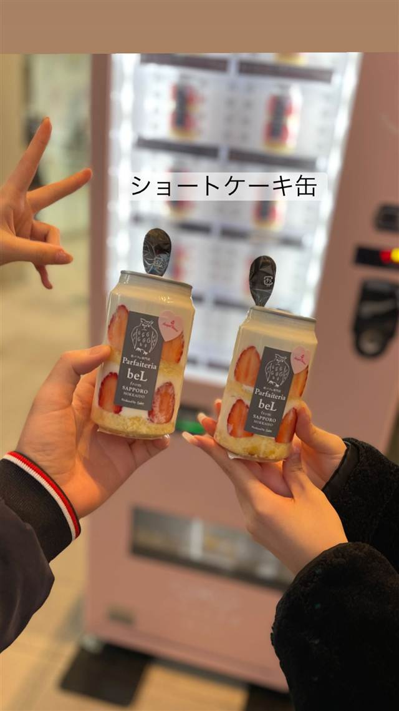

夜パフェ専門店 Parfaiteria beL 渋谷
札幌発“夜パフェ”文化を伝える東京1号店、24時間ケーキ缶自販機も
Parfaiteria beL
「夜パフェ専門店 Parfaiteria beL 渋谷」は、札幌すすきの発祥の“夜パフェ”文化を東京に広めた東京1号店として2017年10月にオープンしました。季節のフルーツをふんだんに使った手作りパフェが看板で、店のそばには24時間稼働のケーキ缶自動販売機もあります。
TRIVIA
豆知識
- “夜パフェ”は元々札幌すすきいのの「シメパフェ」文化から生まれたもので、beL渋谷はその東京進出1号店にあたる
- 店のそばには24時間稼働のケーキ缶自動販売機があり、深夜でも購入できる
REVIEWS
世間の評判
3.59食べログ
見た目の美しい夜パフェの空間
- 芸術的で見た目が美しいパフェだと評価する声が多いという傾向がある
- 落ち着いた雰囲気で大人の夜にぴったりだという声が多い店だとされる
- 見た目の華やかさの割には味のインパクトが薄いと感じる声もある
- 土日は混雑しやすく待ち時間が発生することがあるという声がある
食べログ 口コミ1091件
| 創業 | 2017年10月オープン（東京1号店） |
|---|---|
| 系譜 | “夜パフェ”文化は札幌すすきので生まれ、その1号店「Parfaiteria PaL」は2015年7月開業。beL渋谷はそれを東京に広めた店で、運営は株式会社GAKU |
| 看板 | 夜パフェ（季節のフルーツを使った手作りパフェ） |
| こだわり | パフェのパーツをすべて手作りし、甘さ控えめでフルーツの味を生かす |
| 掲載・評価 | 東京における“夜パフェ”ブームの火付け役とされる |
| どこから | 都心 |
| 営業時間 | 月〜木 17:00-00:00 金 17:00-01:00 土 15:00-01:00 日 15:00-00:00 |
| 予算 | 夜 ¥2,000～¥2,999 |
| 定休日 | 無休 |
| 場所 | 渋谷 東京都渋谷区道玄坂1-7-10 |
| メモ | 渋谷駅から徒歩4分ほど、混雑時は順番待ちシステムを導入 |
食べたもの：ケーキ缶自販機
NEARBY
近い店・同じ系統の店
-
 パスタ 渋谷
KURA 渋谷店
元プロゴルファーら異業種出身者が始めた、もちもち生パスタ50種以上
昼 ¥1,000～¥1,999 夜 ¥2,000～¥2,999
パスタ 渋谷
KURA 渋谷店
元プロゴルファーら異業種出身者が始めた、もちもち生パスタ50種以上
昼 ¥1,000～¥1,999 夜 ¥2,000～¥2,999
-
 ベトナム 渋谷駅
ミス・サイゴン（MISS SAIGON）
ベトナム人スタッフが作る野菜たっぷりのフォーとバインセオ
夜 ～¥5,999
ベトナム 渋谷駅
ミス・サイゴン（MISS SAIGON）
ベトナム人スタッフが作る野菜たっぷりのフォーとバインセオ
夜 ～¥5,999
-
 台湾 恵比寿
七一飯店
週1回だけの営業だった名残の店名、看板は魯肉飯
昼 ¥1,000～¥1,999 夜 ¥1,000～¥1,999
台湾 恵比寿
七一飯店
週1回だけの営業だった名残の店名、看板は魯肉飯
昼 ¥1,000～¥1,999 夜 ¥1,000～¥1,999
-
 コーヒー 渋谷
Café Kitsuné Shibuya
パリ発ブランドのカフェ、狐にちなむ名を持つバゲットサンド
昼 ¥1,000～¥1,999 夜 ¥1,000～¥1,999
コーヒー 渋谷
Café Kitsuné Shibuya
パリ発ブランドのカフェ、狐にちなむ名を持つバゲットサンド
昼 ¥1,000～¥1,999 夜 ¥1,000～¥1,999
-
 コーヒー 渋谷駅
Roasted COFFEE LABORATORY 渋谷神南店
店内焙煎の豆で淹れる「MADE IN SHIBUYA」のコーヒー
昼 ¥1,000～¥1,999 夜 ¥1,000～¥1,999
コーヒー 渋谷駅
Roasted COFFEE LABORATORY 渋谷神南店
店内焙煎の豆で淹れる「MADE IN SHIBUYA」のコーヒー
昼 ¥1,000～¥1,999 夜 ¥1,000～¥1,999
-
 カフェ 渋谷
JINNAN CAFE 渋谷店
ドラマや映画のロケ地に頻繁に使われるとろけるスフレパンケーキ
昼 ¥1,000～¥1,999 夜 ¥1,000～¥1,999
カフェ 渋谷
JINNAN CAFE 渋谷店
ドラマや映画のロケ地に頻繁に使われるとろけるスフレパンケーキ
昼 ¥1,000～¥1,999 夜 ¥1,000～¥1,999